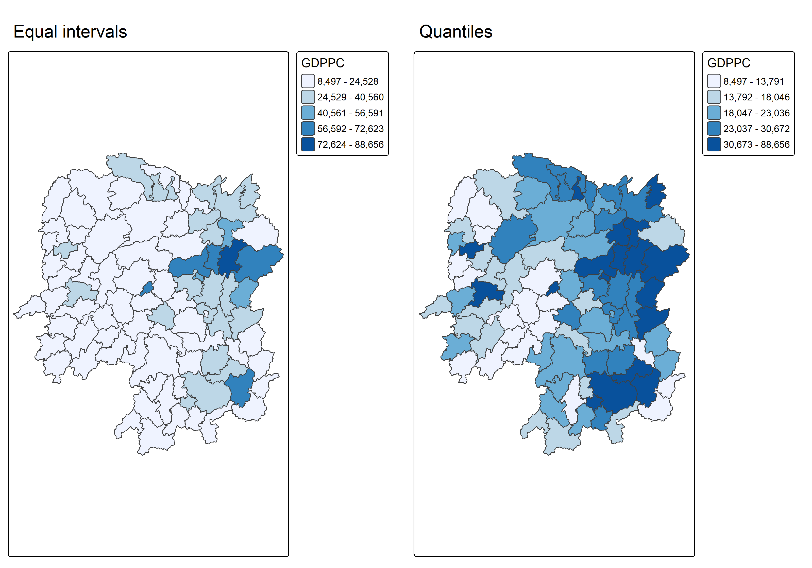
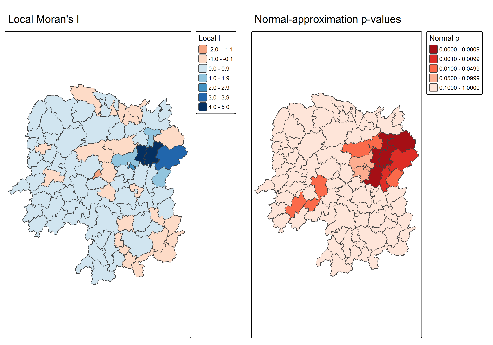
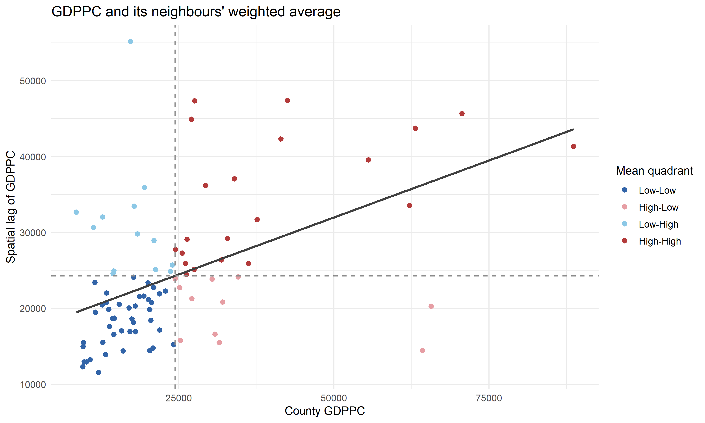
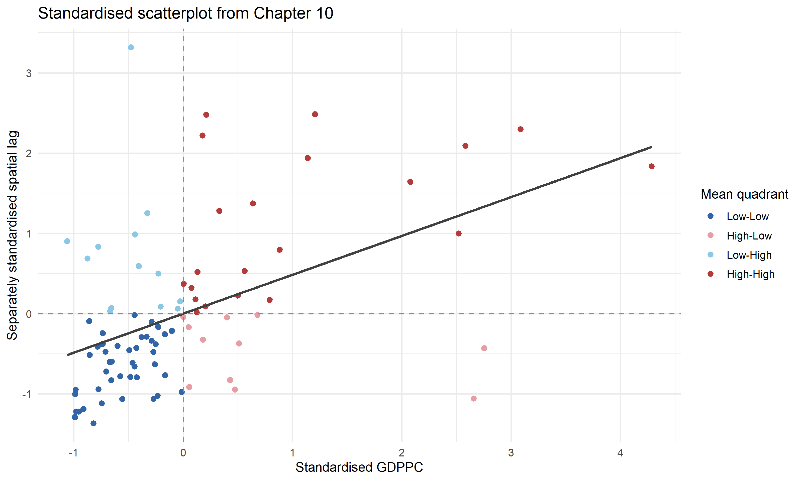
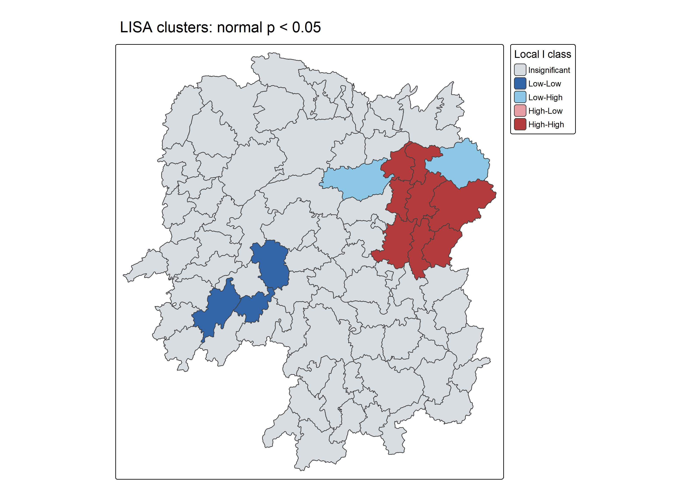
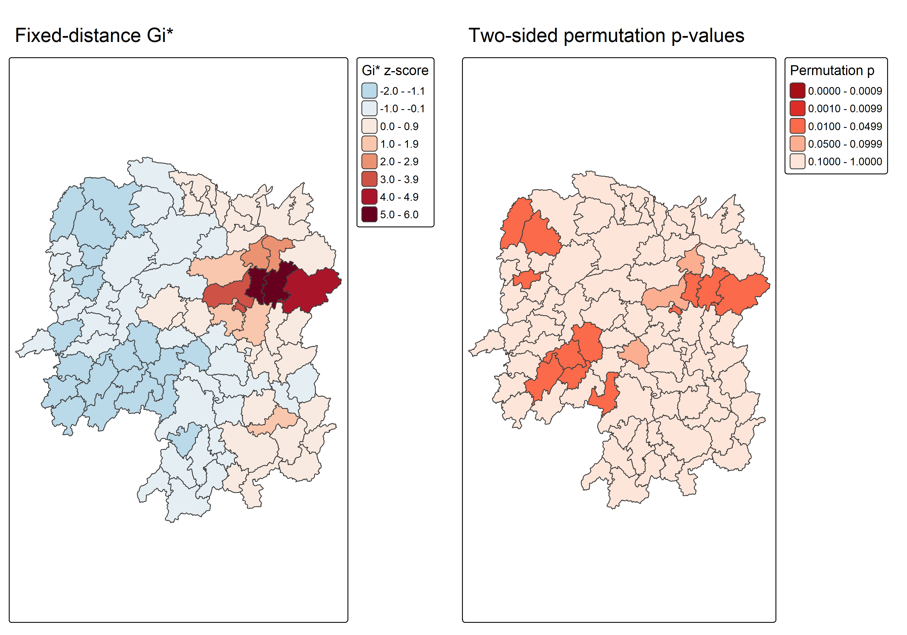
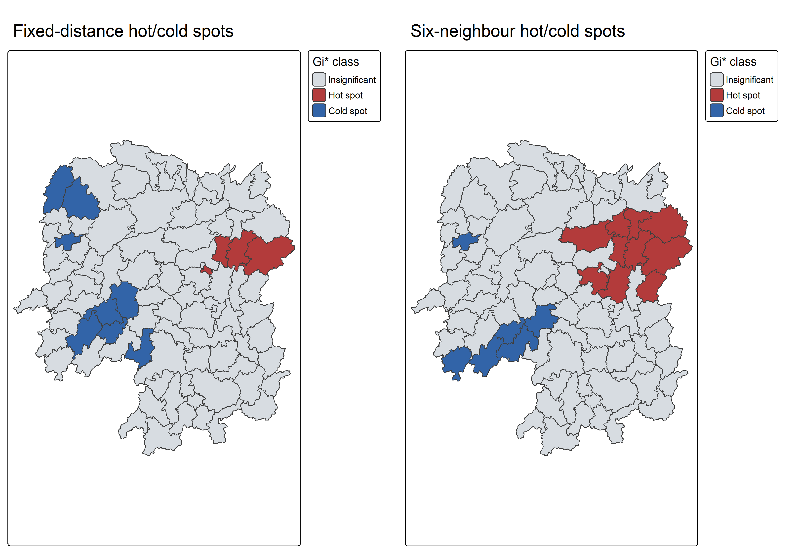
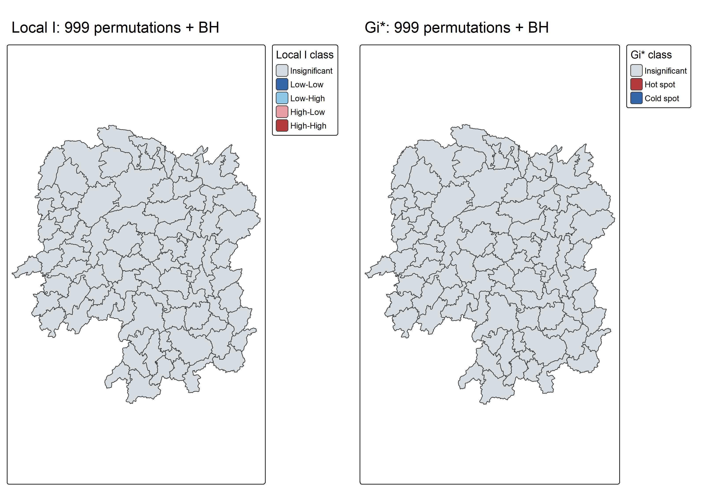

library(sf)
library(sfdep)
library(tmap)
library(dplyr)
library(tidyr)
library(readr)
library(ggplot2)
library(knitr)
tmap_mode("plot")
spdep::set.coresOption(NULL) # Sequential permutation execution.
options(scipen = 5)Hands-on Exercise 5B
Local spatial clusters, outliers, hot spots and cold spots in Hunan
1. Purpose and setup
Exercise 5A examined global association. Here I ask where Hunan’s 2012 GDPPC values form local clusters or contrast with their neighbours. Following Chapter 10: Local Measures of Spatial Autocorrelation, I calculate local Moran’s I using Queen contiguity and Getis–Ord Gi* using fixed-distance weights. I also execute the chapter’s six-neighbour alternative and examine multiple-testing sensitivity.
The chapter uses 99 simulations for its local calculations. I retain that setting for the classroom maps, explicitly set seed 1234 and use one worker for reproducibility. A separate final section uses 999 permutations and BH adjustment; its maps are labelled independently.
2. Import and project the county data
The inputs are shared with Exercises 4 and 5A in handson4/data. They match the user-supplied shapefile and 2012 CSV checked on 3 October 2026. Both county keys and geometry are validated before analysis. I join by the named key and select named fields instead of relying on column positions.
hunan <- st_read("handson4/data/geospatial", layer = "Hunan", quiet = TRUE) |>
st_transform(32650)
hunan2012 <- read_csv("handson4/data/aspatial/Hunan_2012.csv",
show_col_types = FALSE)
stopifnot(!anyDuplicated(hunan$County), !anyDuplicated(hunan2012$County),
setequal(hunan$County, hunan2012$County))
hunan <- left_join(hunan, hunan2012, by = "County") |>
select(NAME_2, ID_3, NAME_3, County, GDPPC)
stopifnot(nrow(hunan) == 88L, !anyNA(hunan$GDPPC),
all(is.finite(hunan$GDPPC)), all(st_is_valid(hunan)),
!st_is_longlat(hunan), st_crs(hunan)$epsg == 32650)
kable(head(st_drop_geometry(hunan)), caption = "Projected county data joined by County")| NAME_2 | ID_3 | NAME_3 | County | GDPPC |
|---|---|---|---|---|
| Changde | 21098 | Anxiang | Anxiang | 23667 |
| Changde | 21100 | Hanshou | Hanshou | 20981 |
| Changde | 21101 | Jinshi | Jinshi | 34592 |
| Changde | 21102 | Li | Li | 24473 |
| Changde | 21103 | Linli | Linli | 25554 |
| Changde | 21104 | Shimen | Shimen | 27137 |
st_crs(hunan)Coordinate Reference System:
User input: EPSG:32650
wkt:
PROJCRS["WGS 84 / UTM zone 50N",
BASEGEOGCRS["WGS 84",
ENSEMBLE["World Geodetic System 1984 ensemble",
MEMBER["World Geodetic System 1984 (Transit)"],
MEMBER["World Geodetic System 1984 (G730)"],
MEMBER["World Geodetic System 1984 (G873)"],
MEMBER["World Geodetic System 1984 (G1150)"],
MEMBER["World Geodetic System 1984 (G1674)"],
MEMBER["World Geodetic System 1984 (G1762)"],
MEMBER["World Geodetic System 1984 (G2139)"],
MEMBER["World Geodetic System 1984 (G2296)"],
ELLIPSOID["WGS 84",6378137,298.257223563,
LENGTHUNIT["metre",1]],
ENSEMBLEACCURACY[2.0]],
PRIMEM["Greenwich",0,
ANGLEUNIT["degree",0.0174532925199433]],
ID["EPSG",4326]],
CONVERSION["UTM zone 50N",
METHOD["Transverse Mercator",
ID["EPSG",9807]],
PARAMETER["Latitude of natural origin",0,
ANGLEUNIT["degree",0.0174532925199433],
ID["EPSG",8801]],
PARAMETER["Longitude of natural origin",117,
ANGLEUNIT["degree",0.0174532925199433],
ID["EPSG",8802]],
PARAMETER["Scale factor at natural origin",0.9996,
SCALEUNIT["unity",1],
ID["EPSG",8805]],
PARAMETER["False easting",500000,
LENGTHUNIT["metre",1],
ID["EPSG",8806]],
PARAMETER["False northing",0,
LENGTHUNIT["metre",1],
ID["EPSG",8807]]],
CS[Cartesian,2],
AXIS["(E)",east,
ORDER[1],
LENGTHUNIT["metre",1]],
AXIS["(N)",north,
ORDER[2],
LENGTHUNIT["metre",1]],
USAGE[
SCOPE["Navigation and medium accuracy spatial referencing."],
AREA["Between 114°E and 120°E, northern hemisphere between equator and 84°N, onshore and offshore. Brunei. China. Hong Kong. Indonesia. Malaysia - East Malaysia - Sarawak. Mongolia. Philippines. Russian Federation. Taiwan."],
BBOX[0,114,84,120]],
ID["EPSG",32650]]This chapter projects Hunan to WGS 84 / UTM zone 50N (EPSG:32650) before computing distance neighbours. The units are metres. Polygon representative points for the sfdep distance functions are points on surface, following the installed package’s implementation; they are not interchangeable with polygon centroids. The projection follows the guide and is not an equal-area representation of all Hunan.
equal_map <- tm_shape(hunan) +
tm_polygons(fill = "GDPPC",
fill.scale = tm_scale_intervals(style = "equal", n = 5,
values = "brewer.blues"),
fill.legend = tm_legend(title = "GDPPC", position = tm_pos_out())) +
tm_title("Equal intervals")
quantile_map <- tm_shape(hunan) +
tm_polygons(fill = "GDPPC",
fill.scale = tm_scale_intervals(style = "quantile", n = 5,
values = "brewer.blues"),
fill.legend = tm_legend(title = "GDPPC", position = tm_pos_out())) +
tm_title("Quantiles")
tmap_arrange(equal_map, quantile_map, ncol = 2)
The maps show variation in raw county GDPPC. They are descriptive and do not establish statistical significance. A quantile classification expresses rank groups rather than equal numerical gaps.
3. Local Moran’s I with Queen weights
st_contiguity() identifies counties that share an edge or vertex. Each neighbour receives equal row-standardised weight, and the focal county is excluded. I retain the polygon row order after attaching the neighbour and weight lists.
wm_q <- hunan |>
mutate(nb = st_contiguity(geometry, queen = TRUE),
wt = st_weights(nb, style = "W"), .before = 1)
summary(wm_q$nb)Neighbour list object:
Number of regions: 88
Number of nonzero links: 448
Percentage nonzero weights: 5.785124
Average number of links: 5.090909
Link number distribution:
1 2 3 4 5 6 7 8 9 11
2 2 12 16 24 14 11 4 2 1
2 least connected regions:
30 65 with 1 link
1 most connected region:
85 with 11 linksstopifnot(all(spdep::card(wm_q$nb) > 0L),
all(abs(vapply(wm_q$wt, sum, numeric(1)) - 1) < 1e-10))
set.seed(1234)
lisa <- wm_q |>
mutate(local_moran = local_moran(GDPPC, nb, wt, nsim = 99,
alternative = "two.sided", iseed = 1234),
.before = 1) |>
unnest(local_moran)
stopifnot(nrow(lisa) == 88L, identical(lisa$County, hunan$County),
!anyNA(lisa$p_ii), all(lisa$p_ii >= 0 & lisa$p_ii <= 1))
kable(lisa |> st_drop_geometry() |>
select(County, GDPPC, ii, z_ii, p_ii, p_ii_sim, mean) |> head(),
digits = 4, caption = "Local Moran results: normal and permutation p-values")| County | GDPPC | ii | z_ii | p_ii | p_ii_sim | mean |
|---|---|---|---|---|---|---|
| Anxiang | 23667 | -0.0015 | -0.1291 | 0.8973 | 0.80 | Low-High |
| Hanshou | 20981 | 0.0259 | 0.3301 | 0.7413 | 0.98 | Low-Low |
| Jinshi | 34592 | -0.0120 | -0.0436 | 0.9652 | 0.92 | High-Low |
| Li | 24473 | 0.0010 | 0.5119 | 0.6087 | 0.56 | High-High |
| Linli | 25554 | 0.0148 | 0.3392 | 0.7345 | 0.58 | High-High |
| Shimen | 27137 | -0.0388 | -0.4139 | 0.6789 | 0.86 | High-Low |
The output separates the observed local statistic (ii), a normal-approximation p-value based on permutation moments (p_ii), and the two-sided permutation rank p-value (p_ii_sim). They are different measures of evidence. To reproduce the chapter’s LISA rule, the main map uses unadjusted p_ii < 0.05. The sensitivity section uses p_ii_sim with 999 permutations.
Statistic and significance maps
ii_map <- tm_shape(lisa) +
tm_polygons(fill = "ii",
fill.scale = tm_scale_intervals(style = "pretty", n = 5,
values = "brewer.rd_bu"),
fill.legend = tm_legend(title = "Local I", position = tm_pos_out())) +
tm_title("Local Moran's I")
p_map <- tm_shape(lisa) +
tm_polygons(fill = "p_ii",
fill.scale = tm_scale_intervals(breaks = c(0, 0.001, 0.01, 0.05, 0.1, 1),
values = "-brewer.reds"),
fill.legend = tm_legend(title = "Normal p", position = tm_pos_out())) +
tm_title("Normal-approximation p-values")
tmap_arrange(ii_map, p_map, ncol = 2)
Large positive local I indicates similarity to surrounding values; negative local I indicates contrast. The statistic’s sign alone cannot distinguish a high-value cluster from a low-value cluster. Significance and quadrant membership need to be considered together.
4. Moran scatterplots and LISA quadrants
GDPPC against its spatial lag
lisa <- lisa |>
mutate(lag_GDPPC = st_lag(GDPPC, nb, wt),
z_GDPPC = as.numeric(scale(GDPPC)),
z_lag_GDPPC = as.numeric(scale(lag_GDPPC)),
lag_z = st_lag(z_GDPPC, nb, wt))
quadrant_colours <- c("High-High" = "#b33b3b", "Low-Low" = "#3264a8",
"Low-High" = "#8cc8e6", "High-Low" = "#e69ea4")
ggplot(lisa, aes(GDPPC, lag_GDPPC, colour = mean)) +
geom_point(size = 2) +
geom_smooth(aes(group = 1), method = "lm", se = FALSE, colour = "grey25") +
geom_hline(yintercept = mean(lisa$lag_GDPPC), linetype = 2, colour = "grey55") +
geom_vline(xintercept = mean(lisa$GDPPC), linetype = 2, colour = "grey55") +
scale_colour_manual(values = quadrant_colours) +
labs(x = "County GDPPC", y = "Spatial lag of GDPPC", colour = "Mean quadrant",
title = "GDPPC and its neighbours' weighted average") +
theme_minimal(base_size = 12)
The dashed lines separate high and low values using the corresponding county and lag means. High–High and Low–Low describe similarity; High–Low and Low–High describe spatial outliers. All points receive a quadrant colour, including those with nonsignificant local tests.
Standardised coordinates
ggplot(lisa, aes(z_GDPPC, z_lag_GDPPC, colour = mean)) +
geom_point(size = 2) +
geom_smooth(aes(group = 1), method = "lm", se = FALSE, colour = "grey25") +
geom_hline(yintercept = 0, linetype = 2, colour = "grey55") +
geom_vline(xintercept = 0, linetype = 2, colour = "grey55") +
scale_colour_manual(values = quadrant_colours) +
labs(x = "Standardised GDPPC", y = "Separately standardised spatial lag",
colour = "Mean quadrant", title = "Standardised scatterplot from Chapter 10") +
theme_minimal(base_size = 12)
Here the original lag is scaled separately, as in the chapter. Its regression slope is therefore not Moran’s I. The conventional Moran scatterplot in 5A instead uses the spatial lag of standardised GDPPC, for which the slope equals I. I retain both z_lag_GDPPC and lag_z to keep these operations distinct.
Significant LISA clusters
lisa_levels <- c("Insignificant", "Low-Low", "Low-High", "High-Low", "High-High")
lisa_colours <- c("#d7dce1", "#3264a8", "#8cc8e6", "#e69ea4", "#b33b3b")
lisa <- lisa |>
mutate(LISA_cluster = factor(if_else(p_ii < 0.05, as.character(mean),
"Insignificant"), levels = lisa_levels))
lisa_map <- tm_shape(lisa) +
tm_polygons(fill = "LISA_cluster",
fill.scale = tm_scale_categorical(values = lisa_colours),
fill.legend = tm_legend(title = "Local I class", position = tm_pos_out())) +
tm_title("LISA clusters: normal p < 0.05")
lisa_map
lisa_counts <- lisa |> st_drop_geometry() |> count(LISA_cluster, .drop = FALSE)
kable(lisa_counts, caption = "Classroom LISA classification: unadjusted normal p-values")| LISA_cluster | n |
|---|---|
| Insignificant | 75 |
| Low-Low | 3 |
| Low-High | 2 |
| High-Low | 0 |
| High-High | 8 |
Local Moran classifications using the chapter’s unadjusted normal p < 0.05 rule.
kable(lisa |> st_drop_geometry() |>
filter(LISA_cluster != "Insignificant") |>
select(County, GDPPC, lag_GDPPC, ii, p_ii, LISA_cluster) |> arrange(p_ii),
digits = 4, caption = "Counties retained by the classroom LISA rule")| County | GDPPC | lag_GDPPC | ii | p_ii | LISA_cluster |
|---|---|---|---|---|---|
| Xiangtan | 27060 | 44939.56 | 0.2453 | 0.0000 | High-High |
| Changsha | 88656 | 41363.67 | 4.9022 | 0.0000 | High-High |
| Wangcheng | 70666 | 45651.17 | 4.4220 | 0.0001 | High-High |
| Pingjiang | 17252 | 55157.75 | -0.9896 | 0.0001 | Low-High |
| Miluo | 42497 | 47383.40 | 1.8704 | 0.0010 | High-High |
| Zhuzhou | 27589 | 47345.67 | 0.3286 | 0.0017 | High-High |
| Liuyang | 63118 | 43747.00 | 3.3688 | 0.0064 | High-High |
| Xiangyin | 33983 | 37058.00 | 0.5453 | 0.0223 | High-High |
| Wugang | 12112 | 11566.33 | 0.7100 | 0.0300 | Low-Low |
| Longhui | 9572 | 12296.67 | 0.8080 | 0.0365 | Low-Low |
| Liling | 41491 | 42323.67 | 1.3774 | 0.0367 | High-High |
| Suining | 16069 | 14382.86 | 0.3758 | 0.0370 | Low-Low |
| Taojiang | 19509 | 35933.71 | -0.2539 | 0.0443 | Low-High |
Local Moran classifications using the chapter’s unadjusted normal p < 0.05 rule.
Of 88 counties, 13 meet the classroom significance rule. High–High identifies above-average counties surrounded by above-average GDPPC; Low–Low identifies the corresponding low-value pattern. High–Low and Low–High identify local contrasts. Grey counties did not meet this rule; they are not proven spatially independent.
5. Distance weights for Gi*
The fixed-distance threshold is the largest nearest-neighbour distance between representative points, ensuring every county has at least one other neighbour. Gi* includes the focal county, unlike the preceding local Moran calculation. The adaptive alternative uses six nearest other counties plus the focal county, and its directed neighbour relation need not be symmetric.
ct <- critical_threshold(st_geometry(hunan))
ct[1] 60799.91hunan_fdw <- hunan |>
mutate(nb = include_self(st_dist_band(geometry, upper = ct)),
wt = st_weights(nb, style = "W"), .before = 1)
hunan_adw <- hunan |>
mutate(nb = include_self(st_knn(geometry, k = 6)),
wt = st_weights(nb, style = "W"), .before = 1)
stopifnot(all(spdep::card(hunan_fdw$nb) >= 2L),
all(spdep::card(hunan_adw$nb) == 7L),
all(vapply(seq_len(nrow(hunan)),
function(i) i %in% hunan_fdw$nb[[i]], logical(1))))
weight_summary <- tibble(Weights = c("Fixed distance", "Six nearest neighbours"),
Minimum_other_neighbours = c(min(spdep::card(hunan_fdw$nb) - 1L), 6L),
Maximum_other_neighbours = c(max(spdep::card(hunan_fdw$nb) - 1L), 6L),
Mean_other_neighbours = c(mean(spdep::card(hunan_fdw$nb) - 1L), 6))
kable(weight_summary, digits = 2)| Weights | Minimum_other_neighbours | Maximum_other_neighbours | Mean_other_neighbours |
|---|---|---|---|
| Fixed distance | 1 | 6 | 3.5 |
| Six nearest neighbours | 6 | 6 | 6.0 |
The computed threshold is 60,799.91 metres (60.8 km). Fixed-distance windows include different numbers of counties; six-neighbour windows adapt their radius to the local spacing of representative points. Both use row-standardised weights.
6. Getis–Ord Gi* and hot/cold spots
set.seed(1234)
HCSA_fdw <- hunan_fdw |>
mutate(gistar = local_gstar_perm(GDPPC, nb, wt, nsim = 99,
alternative = "two.sided", iseed = 1234)) |>
unnest(gistar)
set.seed(1234)
HCSA_adw <- hunan_adw |>
mutate(gistar = local_gstar_perm(GDPPC, nb, wt, nsim = 99,
alternative = "two.sided", iseed = 1234)) |>
unnest(gistar)
stopifnot(nrow(HCSA_fdw) == 88L, identical(HCSA_fdw$County, hunan$County),
all(is.finite(HCSA_fdw$gi_star)), !anyNA(HCSA_fdw$p_sim))
kable(HCSA_fdw |> st_drop_geometry() |>
select(County, GDPPC, gi_star, std_dev, p_value, p_sim, cluster) |> head(),
digits = 4, caption = "Fixed-distance Gi* and its conditional-permutation output")| County | GDPPC | gi_star | std_dev | p_value | p_sim | cluster |
|---|---|---|---|---|---|---|
| Anxiang | 23667 | 0.3831 | 0.4599 | 0.6456 | 0.50 | Low |
| Hanshou | 20981 | -0.2728 | -0.2431 | 0.8079 | 0.92 | Low |
| Jinshi | 34592 | 0.3641 | 0.0190 | 0.9848 | 0.80 | High |
| Li | 24473 | 0.4115 | 0.5986 | 0.5495 | 0.50 | High |
| Linli | 25554 | 0.2174 | 0.0570 | 0.9545 | 0.86 | High |
| Shimen | 27137 | -0.0594 | -0.0821 | 0.9346 | 0.88 | High |
gi_star is the standardised Gi* statistic returned by spdep, while std_dev standardises using conditional-permutation moments. The main significance field, p_sim, is the two-sided permutation rank p-value, following the chapter. With only 99 simulations, the tails have coarse resolution, so values near 0.05 should not be treated as precise.
gi_map <- tm_shape(HCSA_fdw) +
tm_polygons(fill = "gi_star",
fill.scale = tm_scale_intervals(style = "pretty", n = 6,
values = "-brewer.rd_bu"),
fill.legend = tm_legend(title = "Gi* z-score", position = tm_pos_out())) +
tm_title("Fixed-distance Gi*")
gi_p_map <- tm_shape(HCSA_fdw) +
tm_polygons(fill = "p_sim",
fill.scale = tm_scale_intervals(breaks = c(0, 0.001, 0.01, 0.05, 0.1, 1),
values = "-brewer.reds"),
fill.legend = tm_legend(title = "Permutation p", position = tm_pos_out())) +
tm_title("Two-sided permutation p-values")
tmap_arrange(gi_map, gi_p_map, ncol = 2)
Classify and compare the neighbourhoods
hcsa_levels <- c("Insignificant", "Hot spot", "Cold spot")
hcsa_colours <- c("#d7dce1", "#b33b3b", "#3264a8")
classify_gi <- function(z, p) {
factor(case_when(p > 0.05 ~ "Insignificant",
z > 0 ~ "Hot spot", z < 0 ~ "Cold spot",
TRUE ~ "Insignificant"), levels = hcsa_levels)
}
HCSA_fdw <- HCSA_fdw |> mutate(HCSA_cluster = classify_gi(gi_star, p_sim))
HCSA_adw <- HCSA_adw |> mutate(HCSA_cluster = classify_gi(gi_star, p_sim))
hcsa_map <- function(x, title) {
tm_shape(x) + tm_polygons(fill = "HCSA_cluster",
fill.scale = tm_scale_categorical(values = hcsa_colours),
fill.legend = tm_legend(title = "Gi* class", position = tm_pos_out())) +
tm_title(title)
}
tmap_arrange(hcsa_map(HCSA_fdw, "Fixed-distance hot/cold spots"),
hcsa_map(HCSA_adw, "Six-neighbour hot/cold spots"), ncol = 2)
hcsa_counts <- bind_rows(
HCSA_fdw |> st_drop_geometry() |> count(HCSA_cluster, .drop = FALSE) |>
mutate(Weights = "Fixed distance"),
HCSA_adw |> st_drop_geometry() |> count(HCSA_cluster, .drop = FALSE) |>
mutate(Weights = "Six nearest neighbours"))
kable(hcsa_counts, caption = "Class counts using 99 permutations and unadjusted p ≤ 0.05")| HCSA_cluster | n | Weights |
|---|---|---|
| Insignificant | 76 | Fixed distance |
| Hot spot | 4 | Fixed distance |
| Cold spot | 8 | Fixed distance |
| Insignificant | 72 | Six nearest neighbours |
| Hot spot | 10 | Six nearest neighbours |
| Cold spot | 6 | Six nearest neighbours |
Significant hot/cold spots using fixed-distance and six-neighbour weights.
classification_changes <- sum(HCSA_fdw$HCSA_cluster != HCSA_adw$HCSA_cluster)
focal_sign_disagreement <- sum((HCSA_fdw$cluster == "High") !=
(HCSA_fdw$gi_star > 0))The hot/cold rule uses the sign of Gi* among counties with p_sim <= 0.05: positive values indicate hot spots and negative values indicate cold spots. The chapter’s cluster field describes the focal county’s GDPPC relative to its mean, rather than the sign of the neighbourhood statistic. In these fixed-distance results, 17 counties have a focal high/low flag that differs from the Gi* sign, so using the sign directly avoids confusing a focal value with a neighbourhood concentration.
Changing from fixed distance to six nearest neighbours changes the classroom hot/cold classification of 18 counties. This illustrates why a hot spot is conditional on the spatial question and the weight definition.
7. Additional sensitivity check: 999 permutations and multiple testing
The preceding classroom maps test many counties separately. I repeat the local tests using 999 permutations, then apply Benjamini–Hochberg adjustment independently to the 88 local Moran p-values and the 88 fixed-distance Gi* p-values. This is an exploratory false-discovery-rate adjustment; dependence between spatial tests still matters.
# Extra to the chapter: 999 permutations and separate BH families for 88 counties.
lisa999 <- local_moran(hunan$GDPPC, wm_q$nb, wm_q$wt, nsim = 999,
alternative = "two.sided", iseed = 1234)
gi999 <- local_gstar_perm(hunan$GDPPC, hunan_fdw$nb, hunan_fdw$wt, nsim = 999,
alternative = "two.sided", iseed = 1234)
lisa <- lisa |> mutate(p_perm999 = lisa999$p_ii_sim,
p_BH = p.adjust(p_perm999, method = "BH"),
LISA_BH = factor(if_else(p_BH < 0.05, as.character(mean), "Insignificant"),
levels = lisa_levels))
HCSA_fdw <- HCSA_fdw |> mutate(p_perm999 = gi999$p_sim,
p_BH = p.adjust(p_perm999, method = "BH"),
HCSA_BH = classify_gi(gi_star, p_BH))
sensitivity_counts <- tibble(
Method = c("Local Moran's I", "Fixed-distance Gi*"),
Classroom_significant = c(sum(lisa$p_ii < 0.05), sum(HCSA_fdw$p_sim <= 0.05)),
Perm999_significant = c(sum(lisa$p_perm999 < 0.05), sum(HCSA_fdw$p_perm999 <= 0.05)),
Perm999_BH_significant = c(sum(lisa$p_BH < 0.05), sum(HCSA_fdw$p_BH <= 0.05)))
kable(sensitivity_counts, caption = "Sensitivity to simulation count, inference method and BH correction")| Method | Classroom_significant | Perm999_significant | Perm999_BH_significant |
|---|---|---|---|
| Local Moran’s I | 13 | 16 | 0 |
| Fixed-distance Gi* | 12 | 12 | 0 |
Local Moran and fixed-distance Gi* classes after 999 permutations and separate BH adjustment.
lisa_bh_map <- tm_shape(lisa) +
tm_polygons(fill = "LISA_BH",
fill.scale = tm_scale_categorical(values = lisa_colours),
fill.legend = tm_legend(title = "Local I class", position = tm_pos_out())) +
tm_title("Local I: 999 permutations + BH")
hcsa_bh_map <- tm_shape(HCSA_fdw) +
tm_polygons(fill = "HCSA_BH",
fill.scale = tm_scale_categorical(values = hcsa_colours),
fill.legend = tm_legend(title = "Gi* class", position = tm_pos_out())) +
tm_title("Gi*: 999 permutations + BH")
tmap_arrange(lisa_bh_map, hcsa_bh_map, ncol = 2)
Local Moran’s I retains 0 counties after this adjustment; fixed-distance Gi* retains 0. The table distinguishes changes due to more permutations and a different LISA inference field from changes due to multiple-testing correction. A county that loses significance has weaker evidence under the revised rule, not necessarily an absence of spatial structure.
8. Reflection and reproducibility
Local Moran and Gi* answer related but different questions. Local Moran can identify a county that contrasts with its surrounding counties; Gi* evaluates the concentration of high or low values in a neighbourhood including the focal county. Consequently their maps need not select the same places.
These results describe a 2012 county snapshot. They do not explain the mechanisms behind development differences, establish individual household outcomes, or describe current conditions. Neighbourhood choice, outlying GDPPC values, administrative boundaries and the significance procedure all affect the interpretation.
- Download the R analysis
- Download local Moran results
- Download fixed-distance Gi* results
- Download six-neighbour Gi* results
- Download the sensitivity summary
Open ISSS626-GAA.Rproj and run source("handson4B/R/analysis.R") from the project root. Run quarto render handson4B/index.qmd to recompute and regenerate this page. The R source is the code shown in this page and writes the downloadable result tables.
kable(tibble(Package = c("sf", "sfdep", "spdep", "tmap", "dplyr", "tidyr"),
Version = vapply(c("sf", "sfdep", "spdep", "tmap", "dplyr", "tidyr"),
function(p) as.character(packageVersion(p)), character(1))))| Package | Version |
|---|---|
| sf | 1.1.3 |
| sfdep | 0.2.5 |
| spdep | 1.4.2 |
| tmap | 4.4.1 |
| dplyr | 1.2.1 |
| tidyr | 1.3.2 |
R.version.string[1] "R version 4.5.3 (2026-03-11 ucrt)"